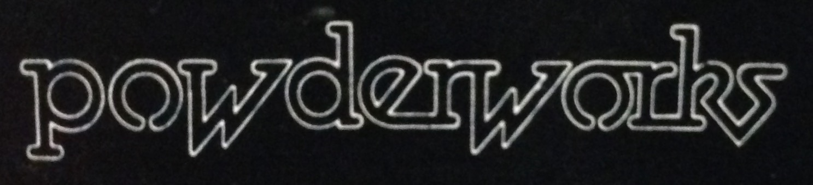

Band linksThe official Midnight Oil website Midnight Oil's official Facebook page The band's management Co: Eleven Bones Hillman's website Jim Moginie's Reverberama (note, music plays on entry) Martin Rotsey's Wikipedia entry Peter Garrett's website Rob Hirst's Ghostwriters on MySpace The Break on Facebook Public resourcesNathan Arrowsmith's comprehensive midnight-oil.info Maurice Kelly's (retired) The Dead Heart |
CommunitiesPowderworkers used to meet in one place only. Now the community meets in more than one place, as the times change and technical community platforms emerge. If you are a community of Powderworkers thriving outside of these, you are welcome to mail the webadmin to ask to list your community here. CurrentFacebook (public) | Powderworkers | 2016 - current | 5000 members Yahoo "take 2" (public, approve to join) | Powderworks | Email Subscription | Jan 2005 - current | 700 members Facebook (private) | Powderworks | March 2017 - current | 370 members RetiredYahoo "take 1" | The Powderworks Archives as recored on midnight-oil.info | Sept 2001 - Jan 2005 | 700? members MajorDomo at Colorado Uni | Lost in time, but here's The Deadheart's explanation | ~1995 - Sept 2001 | 700? members |
Want to improve the website? Fork me on GitHub.
Note that this site aims to be stable and durable - so we are not accepting radical content changes, only in-theme corrections and additions.
mailto: webadmin @ powderworks . org